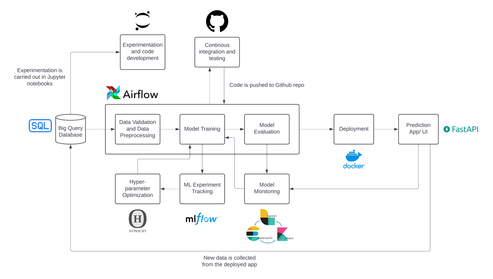

As data scientists, we often find ourselves in the familiar, comfortable realms of Jupyter notebooks and Python IDEs. However, there comes a time when we must step out of our natural habitats and present our work to a broader audience, encompassing various stakeholders. This is where MLOps (Machine Learning Operations) comes into play, bridging the gap between data science and operational processes. In this blog post, I’ll take you through an end-to-end MLOps pipeline based on a project I’ve recently completed. We’ll talk about each stage of the pipeline, exploring how to design processes with the goal of creating robust, scalable machine learning systems. Whether you’re a data scientist looking to operationalize your models or an engineer aiming to optimize ML workflows, this blog post will provide practical insights and strategies to elevate your machine learning projects.
Project Introduction:
I recently completed an end-to-end machine learning project called Price Alchemy, which we will use to explore the various facets of MLOps in practice. You can check out the project here.
Price Alchemy is a price suggestion system for second-hand e-commerce platforms like Mercari or EBay. Imagine you’re a seller on this platform: you need to list an item at a price that’s attractive to buyers but still profitable for you. Pricing too high could deter buyers, while pricing too low could result in a loss. The goal of Price Alchemy is to suggest an optimal price that balances these constraints, maximizing seller profit while ensuring buyer interest.
To achieve this, we developed a model that integrates textual data about the product with tabular data. This approach allows us to predict the price of an item by considering multiple variables such as item category, brand, and description. By leveraging this comprehensive data, the system can make accurate and practical price suggestions tailored to the dynamic nature of the second-hand market.
This project uses the Mercari Price Suggestion Challenge dataset from Kaggle.
Project Structure:
Perusing the GitHub repository tells you that the project contains several setup files and sub-folders for organizing different parts of the project.
Let’s understand the file organization:
data/: This directory contains the raw and processed data. Raw data files (train.csv and test.csv) are stored in this directory, along with processed data files generated at the end of the data-preprocessing pipeline.
notebooks/: Jupyter notebooks play a crucial role in providing a playground for developing code related to exploratory data analysis, data preprocessing, model development, and evaluation. All the Jupyter notebooks developed as a part of the project are stored here.
dags/: Every production level ML system uses a workflow orchestration platform like AirFlow to automate the execution of various pipelines (data preprocessing, training, testing, re-training, etc). In this project, we employ Airflow to take care of this function. This directory contains the source code for Airflow DAGs that automate parts of the machine learning pipeline. It also contains the source code for the price_alchemy module which is used for performing data loading, validation and data preprocessing, modeling, and model evaluation. The price_alchemy module can be easily installed in the working directory using pip.
tests/: An essential but often ignored part of any good project are the tests that are used to validate the proper functioning of the source code. This directory contains unit tests, integration tests, or any other tests relevant to the project.
models/: Saved model files generated during model training are stored in this directory.
.github/workflows: This folder contains YAML files defining workflows for automating various tasks related to the project. In the context of this project, GitHub workflows are used to automate the testing and validation of code changes. This involves running unit tests, integration tests, and code quality checks whenever new code is pushed to the repository.
requirements.txt: A text file listing the Python package dependencies required to run the project.
README.md: Documentation providing an overview of the project, instructions for setup and usage, and any additional information relevant to users and contributors.
Tools and Project Flowchart:
Having understood the project’s file structure, let’s dive into the tools utilized and the overall architecture of the project. The following flow chart details each stage of the project’s workflow, illustrating how data flows through various tools and components, from data ingestion and preprocessing to model training, evaluation, and deployment.

Let’s pause for a moment to talk about the diverse array of tools employed and their pivotal roles in the overall architecture:
BigQuery Database: Imagine starting your machine learning project with a treasure trove of data. That’s what BigQuery is! It’s the ultimate data warehouse in the cloud, capable of handling massive datasets with ease. BigQuery helps us to perform lightning-fast SQL queries on the data, making it the backbone for storing and managing the vast amounts of information needed for the machine learning models. All of the training and validation data is stored in BigQuery for ease of access and scalability.
Jupyter Notebooks: For any data scientist, Jupyter Notebooks are the playground where creativity meets data. We use Notebooks for experimentation, developing parts of the source code, performing EDA, and documenting the findings in one place.
GitHub: GitHub is a platform for collaboration and versioning control. All of the code developed in the project is stored and maintained on GitHub. Furthermore, every time new code is pushed to GitHub, a workflow runs a series of integration tests to ensure everything works the way it’s supposed to.
Apache Airflow: Airflow is like the conductor of an orchestra, ensuring that each part of the ML pipeline runs in harmony. It automates the complex workflows involved in data validation, preprocessing, model training, and evaluation.
MLfLow: A critical aspect of any machine learning project is experimentation. Exploring various data preprocessing techniques, models, and hyper-parameters is essential to identify the optimal solution that meets all the project’s requirements. And, this process of exploration can get chaotic very quickly. MLflow brings order to this chaos by tracking experiments, models, and parameters.
Hyperopt: Tuning a model’s hyper-parameters can be very challenging, so we use Hyperopt to simplify the process. By automating the search for optimal hyper-parameters, Hyperopt ensures that the model reaches its highest accuracy and efficiency.
Docker (Deployment): Consistency is key when moving models from development to production. Docker ensures that our model runs smoothly across different environments by containerizing it with all its dependencies. It’s like packaging your model into a self-contained unit that can be easily transported and deployed anywhere.
FastAPI (Prediction App/UI): To make the model accessible to users, we need an intuitive user interface or a robust API. FastAPI, a modern and high-performance web framework for building APIs with Python, is an excellent choice. It enables us to serve model predictions with minimal latency, ensuring a responsive user experience.
ELK Stack: Elasticsearch, Logstash, Kibana (Model Monitoring): Deploying a model is not the end; it’s just the beginning. Model monitoring ensures that our model continues to perform well in the real world. The ELK Stack – Elasticsearch for searching and analyzing data, Logstash for processing logs, and Kibana for visualizing data – provides a robust solution for monitoring the model.
Stages of a ML project lifecycle:
Developing a machine learning product involves multiple stages, each crucial for ensuring the final solution is effective, scalable, and aligned with business objectives. To make this process smooth, it’s important to follow a structured template that guides the development from starting to finish. In general, the following is a good template to stick to:
Product (What & Why) -> Engineering (How) -> Project (Who & When)
Product Management (What and Why):
Understanding the motivation behind the product and defining clear objectives and key results (OKRs) is the first step in the process. This involves answering:
- What is the motivation behind the product?
- Background: Defining the target customer and their goals is essential. It’s important to clarify:
- Who is the customer we are targeting?
- What is the main goal for the customer?
- What are the obstacles preventing the customer from achieving their goal?
- What can make the customer’s job easier?
- Value Proposition: To create a compelling product, you need to focus on reducing customer pains and creating advantages. Key questions include:
- What needs to be built to help the customer reach their goal?
- How will the product reduce customer pains?
- How will the product create advantages for the customer?
- Background: Defining the target customer and their goals is essential. It’s important to clarify:
- What are the objectives and key results (OKRs) for the product?
- Objective: Defining specific objectives helps focus the product development process. Consider:
- What are the key objectives we want to focus on for the product?
- How does the customer interact with the product?
- Solution: Developing a solution involves identifying core features, integration points, alternatives, and constraints. Addressing these questions is crucial:
- What core features are required to meet our objectives?
- What are the integration points for the solution?
- What are the alternatives to the proposed solution?
- What are the constraints we need to consider?
- What is out-of-scope for this solution?
- Feasibility: Assessing the feasibility of the solution ensures that it can be practically implemented. Important questions include:
- How feasible is our solution?
- Do we have the required resources (data, $, team) to deliver the solution?
- Objective: Defining specific objectives helps focus the product development process. Consider:
By systematically addressing these questions, we can effectively scope and guide the development of machine learning products. This ensures that out end-product is customer-centric, feasible, and valuable.
Engineering (How):
In this stage, the focus shifts from defining goals and understanding customer needs to figuring out how to implement the solution. This involves planning and executing the technical aspects, such as data management, labeling processes, core feature development, and system integration.
Data:
As the old adage in data science goes, “Garbage in, garbage out.” If your data quality is poor, your machine learning model and everything that follows will also be compromised. Ensuring the integrity and quality of your data is paramount to building effective machine learning solutions. While picking a source of data or collecting data, we should try to answer the following questions:
- Training data: What we use to train our machine learning model.
- Do we have access to input labels for the data?
- Do we know the origin of the data and the schema it follows?
- Was there any kind of sampling done to generate this dataset?
- Are we introducing any data leaks?
- Production data: The unseen data that is passed into the machine learning model after deployment.
- Is the data accessible timely and regularly?
- How do we trust that this data follows the same distribution as the training data?
- Labelling and Feature Engineering: Often, we have to label input data to make it suitable for a supervised learning task.
- How do we decide on a label definition that is appropriate with respect to the context of the problem?
- How do we design the labelling process, can it be done in a semi-supervised fashion?
- Which features best capture the essential information needed for the task at hand?
Let’s try to answer some of these questions in the context of Price Alchemy:
Do we have access to input labels for the data?
Yes, the dataset includes the target variable
price, which is the label for supervised learning. This makes it much easier to train a machine learning model by eliminating the labelling step.
Do we know the origin of the data and the schema it follows?
Yes, the data comes from Kaggle’s Mercari Price Suggestion Challenge. The schema includes features such as
item condition,category,brand, anditem description.
How do we trust that this data follows the same distribution as the training data?
The
price_alchemymodule contains a python class (data_validation.py) which allows to apply a range of data quality checks on the input data. From basic checks like validating the minimum and maximum value of features to validating the z-score of thepricevariable, all is covered in this python class.
How do we decide on a label definition that is appropriate with respect to the context of the problem?
The feature
priceis suitable for the problem as it directly aligns with the business objective of estimating the optimal value of items for sale.
Which features best capture the essential information needed for the task at hand?
Key features include
item condition,category,brand, anditem description, as they are directly relevant to determining the price of an item.
Evaluation:
Establishing evaluation criteria early on provides a well-defined roadmap, guiding us through the complexities of data analysis and model development. It sets a quantifiable goal, allowing us to measure progress objectively and make informed decisions throughout the project.
Here are a few points that can help us in designing a good evaluation procedure:
- Deciding on a metric: Translating a qualitative business goal into a quantifiable metric is quite hard. The following questions can be helpful deciding which metric to use.
- What kind of problem is it? Classification or regression?
- Does the metric capture the desired aspect of model performance?
- What are the implications of false positives and false negatives?
- How sensitive is the metric to changes in model predictions?
- Intrinsic Evaluation vs. Extrinsic Evaluation: Intrinsic evaluation involves measuring the model’s performance solely based on its output, independent of any external context. On the other hand, extrinsic evaluation evaluates the model within the context of its application or task, considering how well it performs in real-world scenarios.
- Are there any standardized benchmarks or datasets commonly used for intrinsic evaluation in the field?
- How does the model perform on downstream tasks or applications?
- Online evaluation vs offline evaluation: Offline evaluation involves analyzing historical data sets to assess model performance in controlled environments. Conversely, online evaluation entails evaluating models in real-time or near real-time settings, often using streaming data.
- Does the model need to achieve a certain level of performance before it can be deployed?
- How important is it to assess the model’s performance in dynamic, real-world conditions, including user interactions and changing environments?
- What level of immediacy is required for evaluating model performance and making decisions based on evaluation results?
In the context of Price Alchemy:
What kind of problem is it? Classification or regression?
In this project, we are dealing with a regression problem.
Does the metric capture the desired aspect of model performance?
Mean Absolute Error (MAE) or Root Mean Squared Error (RMSE) would capture how accurately the model predicts prices, reflecting the average prediction error in the same units as the price.
How sensitive is the metric to changes in model predictions?
RMSE is more sensitive to outliers than MAE, making it suitable if large errors are particularly undesirable.
How important is it to assess the model’s performance in dynamic, real-world conditions, including user interactions and changing environments?
It is crucial to assess performance in real-world conditions to capture effects of user behavior and market trends, which can differ from historical data.
Modeling:
How we model our problem can vary greatly based on the context, computational complexity, response time, etc. But, there are some general guidelines that can be followed:
- End-to-End utility: The end result from every iteration should deliver minimum end-to-end utility so that we can benchmark iterations against each other and plug-and-play with the system.
- Rules before ML: Before employing a ML based system, it is helpful to use a deterministic rules based approach as a baseline.
- Augmentation is always better: Augmenting the decision making process for a human is often better than automating the final decision process. This helps in keeping a human in the loop in case the system gives an unexpected result.
- Early releases for validation: Not all early releases need to be end-user facing. Some can be used for internal validation, feedback, data collection, etc.
- Experiment! Experiment! Experiment!: All models should be well tested and evaluated, so that we can objectively benchmark different approaches. This involves testing the code, validating the data quality and logging all the model runs with the hyper parameters used.
In the context of Price Alchemy:
End-to-End Utility:
For
Price Alchemy, this means each model version must predict prices accurately enough to be deployable in a testing or production environment.
Rules Before ML:
Before implementing a ML based pricing system, we can start with a deterministic rules-based approach as a baseline. This could involve setting pricing rules based on factors such as
item_condition,brand, item description keywords, and market trends.
Augmentation is always better:
Rather than fully automating the pricing decision process, augmenting the decision-making process for human oversight is significantly more beneficial. This involves developing a pricing model that provides recommendations or insights to sellers, who can then make informed decisions based on their expertise and intuition.
Experiment! Experiment! Experiment!:
In this project, we make sure to thoroughly test each version of our code using tools like
mypyandpytest. Additionally, we useMLFlowto log each training or cross-validation run of our model. This helps us keep a record of all the settings we use (the hyper parameters) , and the results we get (evaluation metrics). We also keep track of the type of preprocessed data we use to train the model, so we can understand how it affects the results.
Project Management (Who and When):
At the end of the day, it boils down to organizing all the work into reasonable timelines and allocating specific responsibilities to teams/individuals so that the end-product can be delivered on time. Here are a few points to keep in mind.
- Team Involvement: It’s crucial to identify and involve all relevant team members from the start. This includes product managers, data engineers, machine learning engineers, DevOps, UI/UX designers, accessibility experts, and site reliability engineers. Each team has specific roles and responsibilities, ensuring that all aspects of the project are covered comprehensively.
- Deliverables: Breaking down objectives into clear deliverables is essential. Each deliverable should specify the task, the contributors, dependencies, acceptance criteria, and status. This creates a detailed checklist for teams to prioritize their tasks.
- Objective Prioritization: Objectives need to be categorized by priority and assigned to specific releases.
- Timelines and Milestones: Setting a timeline for the project is critical. This involves conducting exploration studies, pushing iterations to development, staging, and eventually production. The timeline should be transparent and allow for adjustments based on feasibility studies and stakeholder feedback.
- Iterative Engagement: Continuous engagement with the product and engineering teams is necessary to ensure the right product is built effectively. Iterative feedback and adjustments help in refining the product continuously.
Conclusion:
Implementing an end-to-end MLOps pipeline is a transformative journey that bridges the gap between data science and operational processes. Through our exploration of the Price Alchemy project, we’ve learned how each part of the MLOps pipeline—from data collection and cleaning to model training, deployment, and monitoring— is essential in creating an accurate, reliable machine learning solution.
Using tools like BigQuery, Jupyter Notebooks, Apache Airflow, and Docker, along with following best practices in product management and project management, we can build a smooth workflow. This systematic approach not only enhances the efficiency of our operations but also ensures that our models deliver real value to end-users.
For data scientists and ML engineers, adopting an MLOps framework offers a structured path to transitioning from experimental notebooks to production-ready systems. It fosters collaboration across multidisciplinary teams, allowing for continuous improvement and facilitates sharing of work with a broader audience.
In summary, MLOps is more than a set of practices; it’s a mindset that embraces the full lifecycle of machine learning projects. By setting up a solid MLOps pipeline, you can make sure your models are practical tools that drive business success. Whether you’re just starting out in data science or looking to improve your ML workflows, integrating MLOps into your projects will take them to the next level.